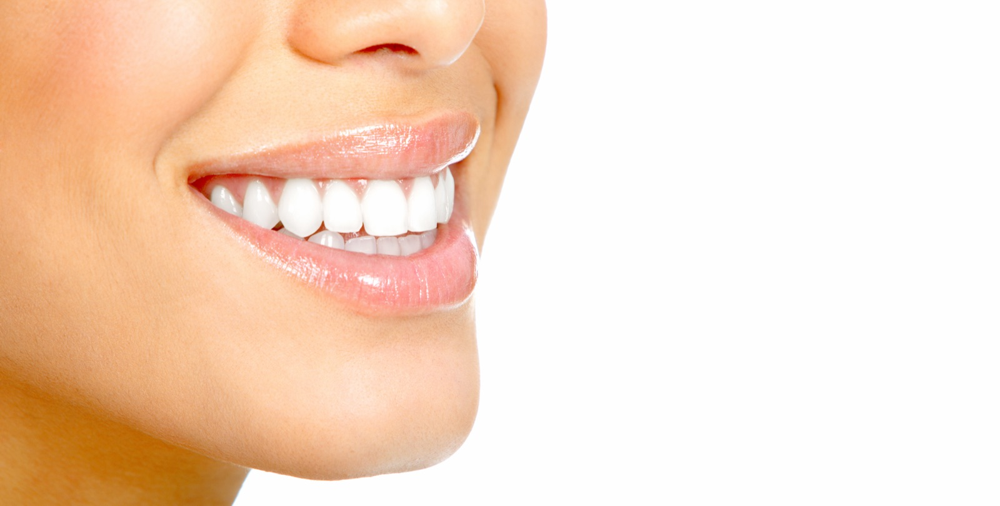
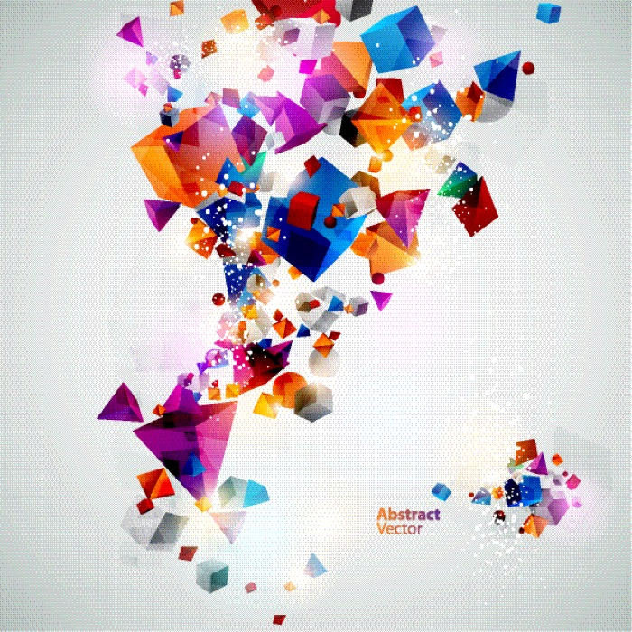

Прегледи и консултации
Редовни контроли, план на терапија и совети за орална хигиена за возрасни и деца.
Стоматолошка ординација · Кавадарци
Комплетна стоматолошка грижа на едно место: од редовен преглед и пломба до протетика, естетска стоматологија и забен рендген во самата ординација — без упатувања и чекање.
Работно време: понеделник – петок, 08:00 – 20:00 ч

★ Твојата насмевка е ѕвезда
Сè што работи една современа стоматолошка ординација — плус естетска стоматологија и рендген дијагностика под ист покрив.
Редовни контроли, план на терапија и совети за орална хигиена за возрасни и деца.
Естетски (бели) пломби и безболно лекување на кариес со современи материјали.
Лекување на коренски канали — спасување на забот наместо вадење.
Коронки, мостови и протези изработени по мерка за природен изглед и удобност.
Професионално белење за посветла насмевка, безбедно за забната глеѓ.
Трпеливост и нежен пристап — првата посета кај стоматолог да биде пријатно искуство.
Екстракции и помали хируршки интервенции во стерилни услови.
Дизајн на насмевка — фасети, безметални коронки и белење за насмевка по мерка. Дознај повеќе ↓
Рендген снимка веднаш, во ординацијата — точна дијагноза без одење во друга установа.
Насмевката може да се дизајнира. Во Вива Стар правиме анализа на насмевката и естетски план по ваша мерка — од професионално белење до фасети и безметални коронки — со рендген дијагностика на лице место, сè во една посета.

Модерна, светла и стерилна ординација на бул. Македонија во Кавадарци, водена од д-р Надица Вчкова.



Вистински оценки од Google. Бевте кај нас? Оставете рецензија — значи многу.
Оценете нè на Google — вашето искуство им помага на соседите да изберат стоматолог.
Otвори Google рецензииДа, за најкратко чекање закажете на 070 396 301. За итни болки јавете се — ќе ве примиме најбрзо што можеме истиот ден.
Да. Имаме забен рендген на лице место, па дијагнозата и планот на терапија ги добивате во истата посета, без одење во друга установа.
Да — детската стоматологија ни е секојдневие — нежен пристап за првата посета да биде пријатна.
Понеделник до петок од 08:00 до 20:00 часот. Викенд — само по договор за итни случаи.
На бул. Македонија 3-ж во Кавадарци. Отворете ја локацијата на Google Maps.
бул. Македонија 3-ж, Кавадарци
(спроти ресторан Ексклузив)
пон – пет: 08:00 – 20:00 ч